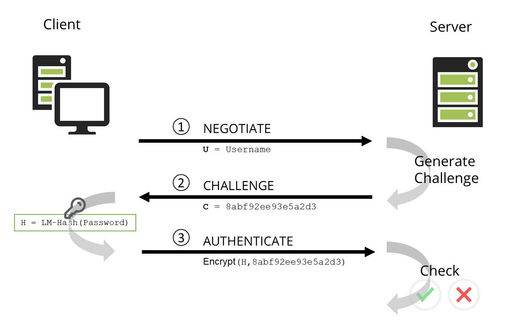

4.6 - אוטנטקציה בדומיין - הרצאה
היום נדבר על 2 שיטות התאמתות בדומיין, ועל החסרונות והיתרונות שלהם.
תהליך האימות ב-LM (Lan Manager)¶
פרוטוקול LM (Lan Manager) הוא פרוטוקול אימות ישן שנעשה בו שימוש בעיקר במערכות Windows עד לשנות ה-90. זהו פרוטוקול פחות מאובטח בהשוואה לפרוטוקולים חדשים יותר כמו NTLM או Kerberos, אבל נמשיך להסביר את התהליך שלו כדי להבין כיצד זה עובד.
איך זה עובד?¶
ב-LM (Lan Manager) האימות מתבצע בצורה מאוד פרימיטיבית ומבוססת על הצפנה מאוד חלשה. כדי להבין את התהליך, ניקח דוגמה של משתמש המנסה להתחבר לשרת SMB (Server Message Block), שהוא אחד מהשירותים ברשת של Windows.

שלב 1: שליחת שם משתמש וסיסמה¶
כאשר המשתמש מנסה להתחבר לשרת SMB, הוא שולח את שם המשתמש וה-סיסמה שלו. נניח שהסיסמה של המשתמש היא Pa$$w0rd.
שלב 2: קידוד הסיסמה¶
ב-LM, התהליך כולל כמה שלבים:
-
הפיכת הסיסמה לאותיות רישיות: כל תו בסיסמה מומר לאות גדולה. כלומר, הסיסמה
Pa$$w0rdתומר ל-PA$$W0RD. -
חיתוך הסיסמה ל-14 תווים: אם הסיסמה ארוכה מ-14 תווים, היא פשוט נחתכת. במקרה שלנו, הסיסמה נשארת באורך של 8 תווים (היא לא חורגת, כך שהיא נשארת כמו שהיא).
-
חישוב Hash: הסיסמה המעובדת הופכת לkey של 14 תווים, והסיסמה תעבור הצפנה על ידי פונקציה של DES (Data Encryption Standard). ההצפנה לא נחשבת מספיק מאובטחת לפי הסטנדרטים של היום. בשיטה הזו, כל סיסמה בה משתמשים יוצרת Hash קל מאוד לפיצוח.
-
יצירת Hash של הסיסמה: כל סיסמה מעובדת מומרת ל-HASH של 16 בתים (16 תווים Hexadecimal), שהוא למעשה הkey להשלמת תהליך האימות.
שלב 3: שליחת ההצפנה לשרת SMB¶
לאחר שהמשתמש מחשב את ה-HASH של הסיסמה, הוא שולח את ה-HASH לשרת ה-SMB במקום לשלוח את הסיסמה הגולמית. התהליך הזה מבוסס על מערכת של Challenge-Response שבה המחשב המשתמש שולח את הkey שהתקבל מהסיסמה המעובדת. זה ייראה כך:
- המחשב יחשב את ה-HASH.
- ה-HASH הזה נשלח אל השרת SMB, שמחזיר אתגר (Challenge) למחשב.
שלב 4: שליחת תשובה מהלקוח (Response)¶
לאחר שהשרת שולח את ה-Challenge, המחשב יחשב תשובה (Response) על פי ה-HASH שהוא קיבל מהסיסמה. תשובה זו נשלחת חזרה לשרת ה-SMB, והוא יבדוק אם התשובה תואמת את חישוב ה-HASH שהוא מצפה לו.
שלב 5: אימות הצלחה או כישלון¶
אם השרת SMB מצליח לאמת את התשובה מהלקוח עם ה-HASH שהוא חישב בעצמו, הוא מקבל את הבקשה של המשתמש ומאפשר לו גישה למשאבים שלו.
אם השרת לא מצליח לאמת את התשובה, הגישה נדחית והמשתמש לא יוכל להיכנס לשירות SMB.
חסרונות של LM¶
למרות ש-LM היה שימושי בזמנו, יש לו כמה בעיות חמורות, שהופכות אותו לחלש וקל לפריצה:
-
הצפנה חלשה: LM משתמש בהצפנה ישנה מאוד מבית DES, שהיא מאוד פרימיטיבית וקל לפרוץ אותה כיום בעזרת כלים כמו Rainbow Tables.
-
מגבלות גודל סיסמה: הסיסמה לא יכולה להיות ארוכה מ-14 תווים. אם סיסמה היא ארוכה, החלק העודף פשוט נחתך.
-
חוסר תמיכה באותיות קטנות: LM ממיר את כל התוים לאותיות רישיות בלבד, דבר שמפשט את כוח האפשרויות של סיסמאות.
-
פגיעות במתקפות Dictionary: בגלל שההצפנה כל כך פשוטה, משתמשים יכולים למצוא את ה-HASHים בעזרת כלים אוטומטיים שמשתמשים במסדי נתונים של סיסמאות ידועות (Dictionary Attacks).
איך NTLMv1 שיפר את האבטחה ביחס ל-LM?¶
פרוטוקול NTLMv1 (NT LAN Manager version 1) שיפר את אבטחת ה-LM בכך שהוא השתמש בהצפנה חזקת יותר ומבוססת על אלגוריתם MD4 (המשתמש ב-128 ביטים) במקום ההצפנה החלשה של DES ב-LM. עם NTLMv1
אבל NTLMv1 עדיין לא היה מושלם, והיו לו חולשות משמעותיות,
כי גם md4 אפשר לשבור בקלות.
שיפור משמעותי הושג ב-NTLMv2.
איך NTLMv2 שיפר את האבטחה ביחס ל-NTLMv1?¶
פרוטוקול NTLMv2 שיפר את האבטחה בצורה הרבה יותר משמעותית ופתר את רוב החולשות של NTLMv1.
-
הצפנה חזקה יותר: ב-NTLMv2, התשובה שמחזיר הלקוח (response) מחושבת עם key חזק יותר והוספת timestamp, מה שהופך את התשובה הרבה יותר קשה לפיצוח. הצפנה זו מבוססת על אלגוריתם HMAC-MD5, שמספק רמת אבטחה גבוהה יותר מ-MD4 של NTLMv1.
-
תוספת של Client-Server Integrity**: ב-NTLMv2, כל התקשורת בין הלקוח לשרת כוללת חתימה דיגיטלית כדי לוודא שהנתונים לא שונו על ידי צד שלישי. הדבר מגביר את האבטחה במקרים של תקשורת בלתי-מאובטחת.
-
לא ניתן להשתמש ב-NTLMv2 במצב "plain text": NTLMv2 מונע את הבעיה שהייתה קיימת ב-NTLMv1, שבה היה ניתן לקבל את סיסמת המשתמש בתקשורת לא מאובטחת.
-
שיפור בשיטה של האתגר (challenge): ב-NTLMv2 השרת שולח אתגר יותר מורכב ומאובטח, שגם הוא כולל timestamp. כל עוד יש הבדל קטן מאוד בזמן בין השרת ללקוח, זה הופך את המתקפות מסוג replay לבלתי אפשריות.
פרוטוקול NTLMv2 שיפר את האבטחה לא רק באמצעות הצפנה חזקה יותר, אלא גם על ידי הקטנת הסיכוי לתקיפות כמו replay attacks, שמאפשרות לתוקפים להעתיק את המידע ולשלוח אותו בשנית בהצלחה.
פרוטוקל NTLM נשאר נפוץ בדומיינים כל לאמת את משתמש מול הDC, אבל בגלל פרצות אבטחה בפרוטוקול, פותח פרוטוקול חדש יותר בשם קרברוס שגם נפוץ מאוד בדומיינים.
קרברוס (Kerberos) – פרוטוקול אימות ברשת¶
קרברוס (Kerberos) הוא פרוטוקול אימות ברשת שמיועד לספק אבטחה גבוהה באמצעות הצפנה ואימות הדדי (mutual authentication) בין הלקוח והשרת. קרברוס פותח במקור על ידי מעבדות MIT (Massachusetts Institute of Technology) ומיועד להבטיח שאף אחד מהצדדים בתקשורת (לקוח או שרת) לא יוכל לזייף את זהותו ולהתחזה לצד השני.
היתרון המרכזי של קרברוס הוא שהוא מספק אימות חזק (הצפנה) וכולל גם את האימות ההדדי, מה שמונע התקפות כמו man-in-the-middle.
הוא מבוסס על מנגנון טוקנים (tickets) – keys הצפנה שנשלחים ממנהל הkeys (Key Distribution Center - KDC) שמשתמש בהן על מנת לאמת את שני הצדדים בתקשורת.
עקרונות העבודה של קרברוס:¶
-
כרטיסי גישה (Tickets) – קרברוס עובד על בסיס כרטיסי גישה שמתקבלים ממנהל הkeys (KDC). כל כרטיס גישה מכיל key הצפנה שמשמש לאימות של המשתמשים ושל השירותים.
-
המנהל המרכזי (KDC) – המנהל המרכזי אחראי להנפיק את הכרטיסים עבור המשתמשים והשירותים. המנהל המרכזי כולל שתי יחידות:
- שירות הTGS (Ticket Granting Service) – שירות המנפיק את הכרטיסים למשאבים השונים ברשת.
- שירות הAS (Authentication Service) – שירות האימות הראשוני שמנפיק את כרטיס הגישה הראשוני למשתמש.
בדרך כלל הKDC הוא שירות שרץ על הDC של הדומיין.
-
אימות הדדי – קרברוס מאמת את שני הצדדים (לקוח ושרת), כלומר גם הלקוח וגם השרת מאמתים את הזהות של השני בעזרת כרטיסים.
-
לא צורך בסיסמה חוזרת – קרברוס לא שולח סיסמאות ברשת, אלא כרטיסי גישה, דבר שמקטין את הסיכון שיסווגו הסיסמאות.
תהליך עבודה של קרברוס (Kerberos Authentication):¶

-
שלב 1: בקשה ל-AS (Authentication Service)
- המשתמש נכנס למחשב ומבצע התחברות עם שם המשתמש והסיסמה שלו.
- המחשב שולח בקשה ל-AS לקבלת כרטיס גישה. הבקשה הזו כוללת את שם המשתמש (למשל: jdoe) ואת הזמן הנוכחי (timestamp) כדי למנוע התקפות replay.
-
שלב 2: קבלת TGT (Ticket Granting Ticket)
-
אם פרטי המשתמש תקינים, ה-AS ייצור כרטיס TGT (Ticket Granting Ticket). הכרטיס הזה מוצפן בkey של ה-KDC וכולל את פרטי המשתמש, מידע על הזמן ותוקף הכרטיס.
- הכרטיס נשלח חזרה למחשב של המשתמש, שיאחסן אותו כדי להשתמש בו בשלבים הבאים.
-
שלב 3: בקשה ל-TGS (Ticket Granting Service)
-
ברגע שהמשתמש רוצה לגשת לשירות מסוים ברשת (למשל, SMB), הוא שולח בקשה לשירות ה-TGS עם כרטיס ה-TGT שלו, ובקשה עבור כרטיס שירות שיאפשר לו להתחבר לשירות המסוים.
- בקשה זו מכילה את מזהה השירות שאליו המשתמש רוצה להתחבר, כמו שרת SMB.
-
שלב 4: קבלת כרטיס שירות (Service Ticket)
-
ה-TGS בודק אם ה-TGT של המשתמש תקף ואם הוא רשאי לגשת לשירות המבוקש. אם כן, ה-TGS מנפיק כרטיס שירות (Service Ticket), שמכיל key הצפנה שמשתמש רק עבור השירות הספציפי שהמשתמש ביקש.
- כרטיס השירות מוצפן בkey השירות עצמו, כלומר השרת המבוקש בלבד יכול לפענח אותו.
-
שלב 5: התחברות לשירות (SMB, לדוגמה)
-
המשתמש שולח את כרטיס השירות לשרת ה-SMB.
- השרת בודק את כרטיס השירות ומוודא שהkey תואם.
- לאחר מכן, השרת מאמת את זהות המשתמש ומשיב לו תשובה מוצפנת עם כרטיס גישה זמני (Session Key), המאפשר להם לתקשר בצורה מאובטחת.
- כעת, המשתמש והשרת יכולים לתקשר בצורה מוצפנת ומאובטחת תוך שימוש בכרטיס השירות והסשן קי.
דוגמת תהליך התחברות של משתמש דומיין לשרת SMB באמצעות קרברוס¶
נניח שמישהו בשם jdoe, משתמש דומיין, רוצה לגשת לשרת SMB ברשת. תהליך האימות ייראה כך:
- המשתמש מבצע התחברות למחשב עם שם משתמש jdoe והסיסמה שלו.
- המחשב שולח בקשה ל-AS (Authentication Service) לקבלת כרטיס GTC (Ticket Granting Ticket).
- ה-AS מאמת את הסיסמה, ויוצר כרטיס GTC מוצפן בkey ה-KDC ומחזיר אותו למחשב של המשתמש.
- המשתמש רוצה לגשת לשרת SMB, אז הוא שולח בקשה לשירות ה-TGS (Ticket Granting Service) עם כרטיס ה-TGT שברשותו, ומבקש כרטיס שירות עבור שרת SMB.
- ה-TGS מאמת את הבקשה ומנפיק כרטיס שירות שמכיל את הkey הדרוש לגישה לשירות SMB.
- המשתמש שולח את כרטיס השירות לשרת SMB.
- השרת מאמת את הכרטיס בעזרת הkey המוצפן ומוודא שהמשתמש הוא אכן jdoe.
- השרת שולח כרטיס גישה זמני (Session Key) למחשב של המשתמש, שמאפשר להם להתחיל לתקשר בצורה מאובטחת.
- כעת המשתמש יכול לגשת למשאבים על שרת ה-SMB בצורה מאובטחת תוך שמירה על הצפנה ואימות הדדי.